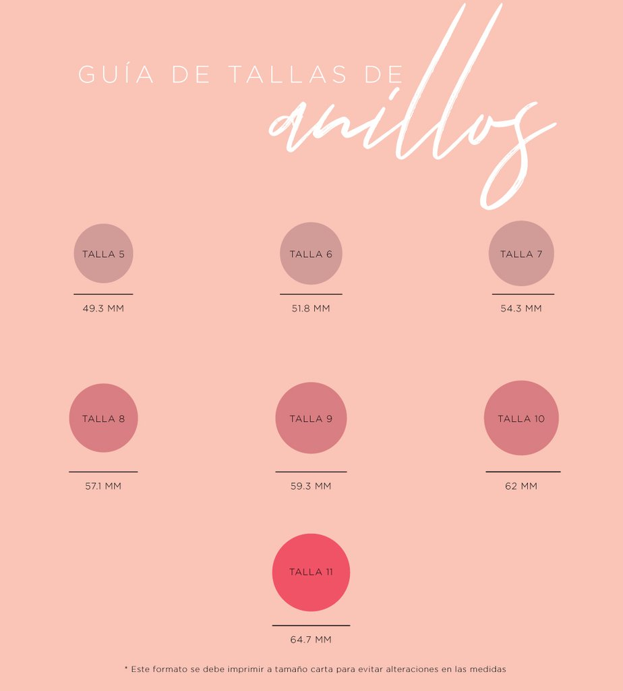

<div class="container jumbotron filtrar">
    <div class="text-center col-xs-12 col-sm-12 col-md-12 col-lg-12">
        <p class="h2 top">Guía de Anillos</p>
        <p class="h6 mt-5">
            Coloca tu anillo encima del círculo que más se acerque a su tamaño.
            <br>
            o
            <br>
            Coloca un hilo grueso en la circunferencia del dedo y márcalo, mídelo en milímetros y selecciona la talla que mejor se aproxime a la medida obtenida.
            <br>
            <!--<strong>*Este formato se debe imprimir a tamaño carta para evitar alteraciones en las medidas (para imprimir da click sobre la imagen)</strong>-->
        </p>
        
    </div>
    
</div>
